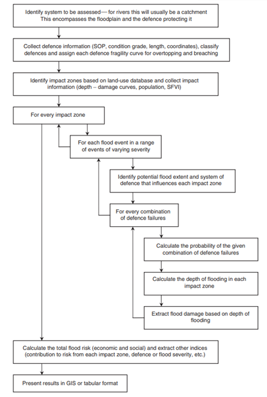
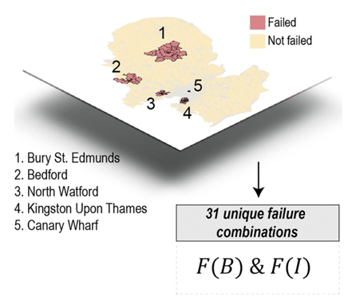
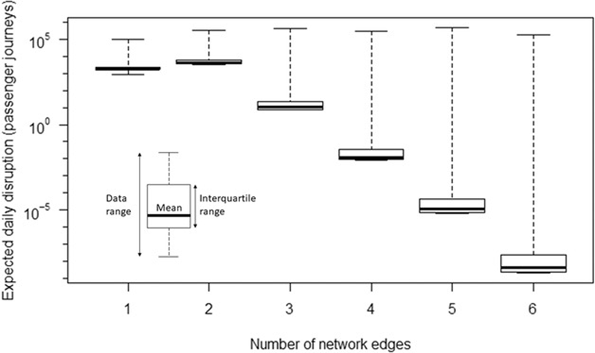

This mini-lecture explores three different examples of how the likelihood and impacts of multiple infrastructure assets can be disrupted simultaneously by large-scale hazards. The mini-lecture closes with a discussion on the pros and cons of applying each of these approaches.
To distinguish between different approaches that can be employed to analyse the risks of multiple infrastructure asset failures
To be able to evaluate the pros and cons of different approaches to different applications.
Hazards are often driven by large-scale weather processes that may impact multiple infrastructure assets at the same time (see mini-lecture 10.3 for further discussion on this topic).
Analysing the likelihood and consequences of multiple assets failing simultaneously would involve: (1) assessing asset vulnerability, (2) quantifying the impacts of scenarios in which multiple assets fail, and (3) quantifying the strength of spatial dependence between hazards (or the likelihood of multiple hazards) at the multiple sites under consideration.
This mini-lecture goes through three examples of research that accounts for the risk of multi-asset failures:
The first example discusses the overall method developed for a comprehensive flood risk assessment, from calculating asset-level vulnerability through fragility analysis, to understanding the impacts of combinations of failures of sections along a flood defence (Hall et al. 2003).
The second example illustrates a simplified approach for understanding the potential impacts of single and multiple failures of a small number of electricity substations (Koks et al. 2019).
The third example undertakes a rigorous assessment of the likelihood that hazards affect multiple assets simultaneously and the impacts of scenarios in which multiple assets fail. These are undertaken to calculate a system‐wide estimate for the risk of scour resulting in bridge failures (Lamb et al. 2019).
Figure 10.4.1 provides an overview of a potential methodology for calculating flood risk at a national scale (Hall et al. 2003). First, data on the locations of floodplains and flood defences, along with important characteristics, such as the land use type of the floodplain and the condition and length of flood defences. Potential flood extent scenarios are collected and assigned to their respective defence systems. The risk of combinations of defence section failure are derived based on hazard likelihood and severity (flood depth and extent) and the characteristics of the floodplain (depth-damage relationship). The final step is to aggregate the risk output for each floodplain to provide a national picture of flood risk.

Figure 10.4.1: Overview of method for national scale flood assessment (Hall et al. 2003)
Although the methodology includes an assessment of the potential outcomes of multiple flood defence sections failing at once at individual floodplains, the joint likelihood of flood hazards affecting multiple rivers at once is not calculated. Thus, the aggregation of risks (in term of expected annual damage) across all floodplains across the country would be affected by the assumption of full dependence, as discussed in mini-lecture 10.3.
Koks et al. (2019) aim to estimate the extent of business disruptions and economic loss caused by electricity failures and flooding in the UK. To do this, they also analyse the extent of damages that would be incurred if multiple electricity substations were to be damaged at the same time due to a widespread flood event.
They identified five electricity substations that are exposed to a 1 in 1,000-year flood event. Because the number of assets under consideration is relatively small (5), the computational burden of simulating the full range of potential combinations of failures is not exhaustive. The study simulated 31 unique failure combinations, ranging from failure of one substation up to the failure of all five substations at once.
Figure 10.4.2 below shows a region of the UK, illustrating the location of these substations and the spatial extent of the affected service areas.

Figure 10.4.2: The spatial extent of disruption that would occur as a result of each of five electricity substations failing (Koks et al. 2019)
The extent of disruption to business activities and economic losses caused by these scenarios of single and multiple asset failures are then quantified. This approach simplifies the analysis, as the likelihood of different combinations of failure is not taken into account. However, the scalability of this method is limited, as it would be computationally inefficient to quantify the impacts of all potential combinations of asset failure for a larger number of assets.
Lamb et al. (2019) calculate a system‐wide estimate for the risk of bridge failures caused by scour in the UK, by quantifying the likelihood of passenger journey disruptions and associated economic consequences.
They do this in two stages. First, they quantify the spatial dependence of flooding at the bridges under consideration using a spatial joint probability model for extreme river flows for all river gauging sites in Britain. This is then combined with a model for passenger journey disruption in the event of a bridge failure.
Figure 10.4.3 represents the distribution of daily expected rates of passenger journey disruptions caused by the flood-induced failure of bridges on one railway line or combinations of up to six network railway lines. The daily rate of passenger disruption attributable to the failure of bridge(s) on a single railway line (network edge) is only ~24% of the total risk, whereas risk of disruption caused by combinations of multiple railway line disruptions is much greater, at 76% of the risk.

Figure 10.4.3: The distribution of all disruptions identified in the analysis with respect to the number of railway lines simultaneously disrupted (Lamb et al. 2019)
This example provides a comprehensive risk assessment of scour-induced bridge failure on railway infrastructure. However, the study only analysed a single type of asset (bridges) and the consequence for one infrastructure sector (railway journeys). In the context of multiple types of assets and multiple, interacting infrastructure systems (water, electricity and transport) this would be significantly more complex.
These examples provide an overview of different approaches for addressing the problem of assessing multi-failure risks.
Although the first two examples do consider the scenarios of multiple assets failing, neither quantify the joint probability of hazard loading at multiple assets. Hall et al. (2003) do consider the potential outcomes of multiple flood sections failing at the scale of each floodplain, however, the joint likelihood of flood hazards affecting multiple rivers at once is not calculated when aggregating risks at the national scale. For Koks et al. (2019), given the small number of assets, it was possible to simulate the full range of potential combinations of failures. The limitation of this is that they do not analyse the likelihood of these failure combinations.
In contrast, Lamb et al. (2019) provide a comprehensive analysis of both the likelihood and consequences (in terms of passenger disruptions) of bridge failure due to large-scale flooding, however this would be incredibly complex to undertake in the context of multiple inter-dependent assets and infrastructure systems.
In summary, it is important to consider the complexity and computational burden of simulating many combinations of failure. Isolating the most likely potential combinations can be achieved by understanding the spatial dependence between hazards (e.g. extreme river flows) through joint-probability statistics. The consequences of the most likely combinations of asset failures can subsequently be examined to provide an estimate of risk.
This mini-lecture described, evaluated and compared different ways to analyse the likelihood and impacts of multiple infrastructure assets being affected simultaneously by large-scale hazards. You should now be able to distinguish between different approaches that can be employed to analyse the risks of multiple infrastructure asset failures and evaluate the pros and cons of each approach.